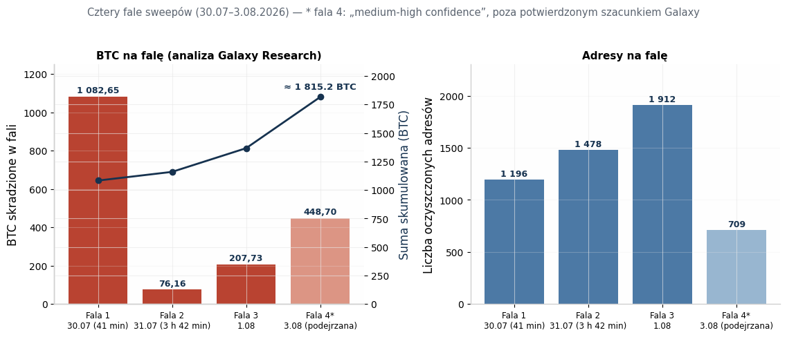
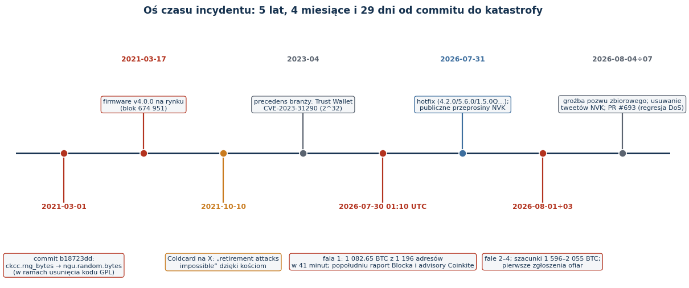
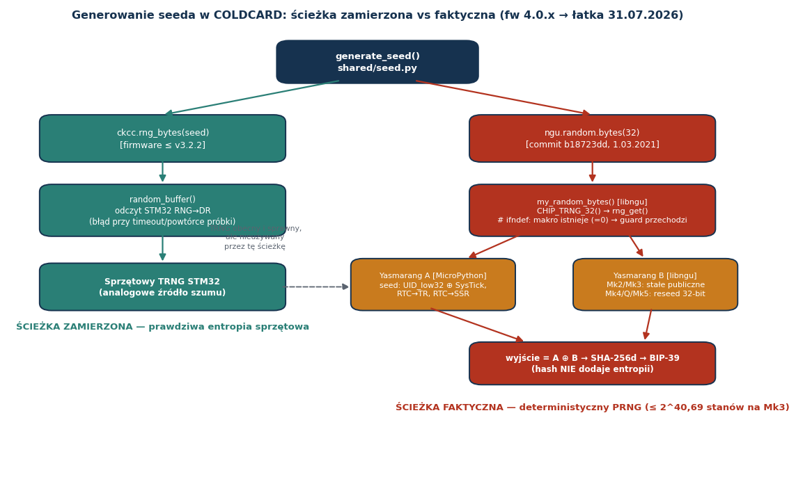
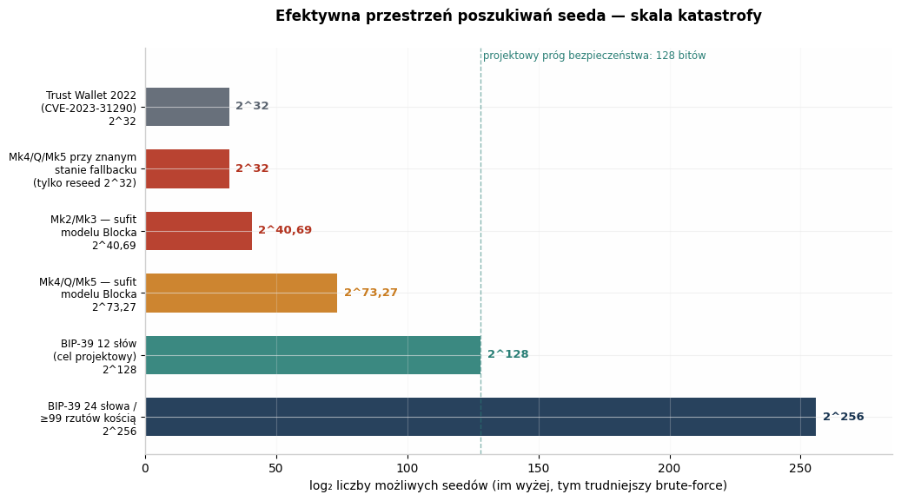
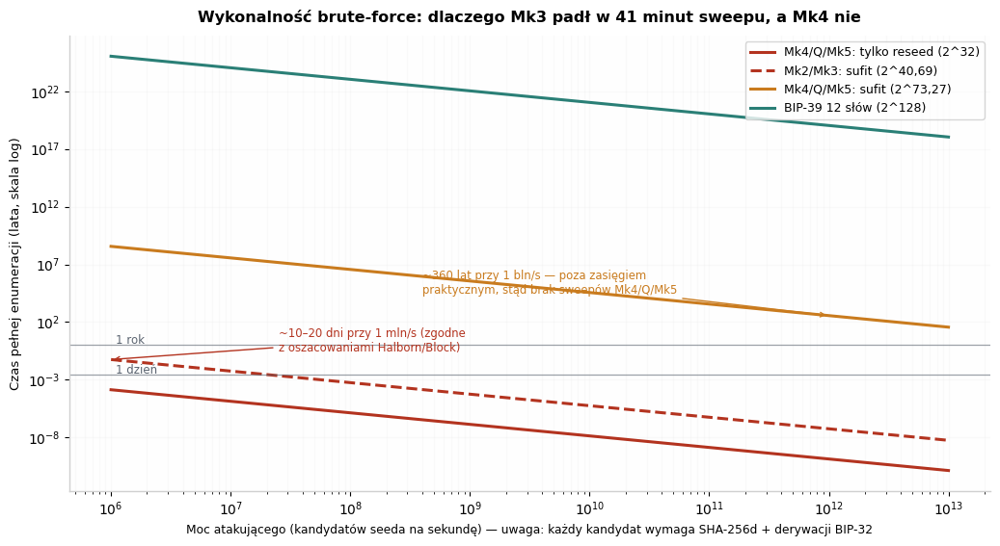

Hack na entropię Coldcard (lipiec–sierpień 2026): inżynieryjna analiza krytyczna incydentu, technologii seed i granic modelu self-custody BTC
Typ dokumentu: raport badawczy na poziomie inżynierskim (deep research) — analiza przyczyn źródłowych, rekonstrukcja matematyczna przestrzeni poszukiwań, kontekst branżowy, rekomendacje obronne. Stan na: 10 sierpnia 2026 r. (aktualizacja — patrz rozdział 10)
1. Streszczenie wykonawcze
W czwartek 30 lipca 2026 r., w oknie 41 minut (01:10:20–01:51:26 UTC), nieznany aktor opróżnił 1 196 adresów Bitcoin, zabierając 1 082,65 BTC (ok. 70,2 mln USD) — bez fizycznego dostępu do jakiegokolwiek urządzenia, bez złamania PIN-u, bez ataku na protokół Bitcoina 43. W kolejnych dniach nastąpiły co najmniej trzy dalsze fale; potwierdzone szacunki Galaxy Research mówią o 1 596 BTC z ok. 7 300 adresów, a scenariusz z czwartą falą podnosi łączną stratę do 2 055 BTC (~130 mln USD) 56. Był to największy znany exploit portfela sprzętowego w historii i trzeci co do wielkości hack kryptowalutowy 2026 roku 15.
Przyczyna źródłowa nie była spektakularna w sensie kryptograficznym — była trywialna w sensie inżynieryjnym i dlatego tak przerażająca. 1 marca 2021 r., w commicie b18723dd, Coinkite zmigrowało generowanie seeda z własnej funkcji ckcc.rng_bytes() (sięgającej sprzętowego generatora TRNG mikrokontrolera STM32) do ngu.random.bytes() z biblioteki libngu 18. Przez błąd w strażniku preprocesora — #ifndef sprawdzające istnienie makra MICROPY_HW_ENABLE_RNG zamiast jego wartości — symbol rng_get() rozwiązał się w konsolidatorze do programowego generatora Yasmarang, inicjalizowanego z identyfikatora układu i rejestrów zegara 18. Efekt: przez 5 lat, 4 miesiące i 29 dni portfele generowały mnemoniki wyglądające na losowe, lecz o efektywnej przestrzeni poszukiwań ≤ 2^40,69 na Mk2/Mk3 i ≤ 2^73,27 na Mk4/Mk5/Q, zamiast projektowych 2^128 13.
Raport odpowiada na sześć pytań: co się stało (rekonstrukcja fal i skali), dlaczego (analiza inżynieryjna, organizacyjna i kulturowa), jak działa technologia seed (formalne podstawy BIP-39/BIP-32, TRNG vs PRNG), co robił i mówił właściciel (komunikacja kryzysowa Rodolfo Novaka i historia jego ataków na konkurencję), jakie były precedensy (Trust Wallet, Dark Skippy, Kraken vs Trezor, Ledger Recover) oraz jak się zabezpieczyć (migracja, kości, passphrase, multisig, higiena inżynieryjna). Kluczowa teza: bezpieczeństwo portfela sprzętowego rozstrzyga się w milisekundzie generowania seeda, a wszystkie późniejsze warstwy — air-gap, secure elementy, stalowe backupy — są wtórne wobec jakości entropii 1.
2. Skala i przebieg ataku: cztery fale i anatomia sweepu
2.1. Rekonstrukcja on-chain
Atak nie miał postaci pojedynczej transakcji exploitującej — nie istniał „smart contract z dziurą”, nie było włamania do infrastruktury Coinkite. Napastnik przez tygodnie lub miesiące rekonstruował offline kandydatów na seedy, derywował z nich adresy i porównywał je z publicznym rejestrem UTXO, a następnie wykonał skoordynowane „wymiecenie” (sweep) skompromitowanych portfeli zwykłymi, poprawnymi transakcjami 13. Galaxy Research zrekonstruowało falę pierwszą: 1 196 adresów opróżnionych w całość, bez outputów reszty, ze stałą, zaszytą na sztywno opłatą 30 sat/vB, w sześciu blokach 43. Fala druga (27 godzin później, 76,16 BTC z 1 478 adresów przez 3 h 42 min) używała głównie 10 i 50 sat/vB; odciski transakcyjne dwóch pierwszych fal wskazują na jednego operatora lub jedno narzędzie, trzecia łamie wzorzec 43.
Dowód „genetyczny” potwierdził związek z błędem: wszystkie 3 953 skradzione monety z dwóch pierwszych fal zostały wykute (utworzone) po bloku 674 951 — czyli po 17 marca 2021 r., dniu wydania podatnego firmware v4.0.0; najstarsza moneta fali pierwszej pochodzi z bloku 675 955, fali drugiej z 675 829 43. To sygnatura czasowa dokładnie zgodna z oknem podatności: atakujący rekonstruował wyłącznie seedy wygenerowane przez wadliwy firmware.
| Fala | Data/czas (UTC) | Adresy | BTC | Charakterystyka |
|---|---|---|---|---|
| 1 | 30.07.2026, 01:10–01:51 (41 min) | 1 196 (później skorygowano do 1 195) | 1 082,65 | stała opłata 30 sat/vB, brak reszt, 6 bloków 43 |
| 2 | 31.07.2026 rano (3 h 42 min) | 1 478 | 76,16 | głównie 10/50 sat/vB, zbiór ofiar rozłączny z falą 1 43 |
| 3 | 1.08.2026 | 1 912 | 207,73 | inny odcisk transakcyjny — inny aktor lub zmiana taktyki 42 |
| 4 (podejrzana) | 3.08.2026 | ~709 | ~448,7 | „medium-high confidence”, wyłączona z potwierdzonego szacunku Galaxy do czasu potwierdzeń ofiar 56 |

2.2. Rozbieżności szacunków i dlaczego są nieuniknione
Bitcoin identyfikuje adresy, nie ludzi ani modele urządzeń — przypisanie sweepu do błędu Coldcard opiera się na heurystykach (pełne opróżnienie bez reszty, podobne typy inputów, ciasne okna czasowe, powtarzalne opłaty, wspólne miejsca docelowe, późniejsze współwydawanie) oraz na zgłoszeniach ofiar, a nie na kryptograficznej reprodukcji każdego seeda 13. Dlatego liczby różnią się między trackerami i należy je prezentować jako przedziały z metodologią, nie jako pojedynczą „prawdę”.
| Źródło / tracker | Stan na | Szacunek | Metoda |
|---|---|---|---|
| Galaxy Research (potwierdzone) | 3–4.08.2026 | 1 596 BTC z ~7 300 adresów (3 fale + 14 mniejszych incydentów; 73 zgłoszenia ofiar) | on-chain + kanał prywatny z ofiarami 56 |
| Galaxy Research (z falą 4) | 4.08.2026 | do 2 055 BTC (~130 mln USD) | jak wyżej, fala 4 „medium-high confidence” 56 |
| Coldcard Sweep Watch (zweryfikowane minimum) | 7.08.2026 | 1 405,07 BTC z ~4 925 adresów | publiczna metodologia, tylko potwierdzone klastry 13 |
| coldcard.rip (atrybucja falowa) | 3.08.2026 | 1 433,13 BTC z 5 477 adresów, 10 fal | klasyfikacja falowa z trasami i opłatami 13 |
| TRM Labs | 5.08.2026 | ~1 816 BTC (~116 mln USD), 5 200+ adresów, 4 fale | analityka blockchain + wskaźniki wielu aktorów 15 |
| Halborn | 7.08.2026 | ~7 300 adresów, straty >130 mln USD | synteza publiczna 10 |
Ponad 90% skradzionych środków nie ruszyło się po kradzieży — monety z trzech pierwszych potwierdzonych fal leżały nienaruszone na adresach kontrolowanych przez atakujących, co jest nietypowe przy tej skali i dawało śledczym okno na koordynację z giełdami i organami ścigania 54. Różnice w konstrukcji transakcji między falami skłaniają TRM i Galaxy do hipotezy wielu niezależnych aktorów (TechCrunch mówi o „co najmniej kilkunastu” hakerach, crypto.news o 15+), którzy — po upublicznieniu mechanizmu — ruszyli na łowy, zanim użytkownicy zmigrują fundusze 12. W szczycie czwartej faly obserwowano ~13,8 sweepu na blok wobec ~0,3 przed incydentem 54.
2.3. Ofiary i rozmiar ludzki
Profil strat był odwrotnie proporcjonalny do typowego hacka na giełdę: liczebnie dominowały adresy sub-1 BTC, wartościowo — większe salda, czyli indywidualni hodlerzy self-custody, nie instytucje 43. Ikoniczną historią stał się kanadyjski przedsiębiorca Jonathan Goodman: 18,25245667 BTC (ok. 1,6 mln CAD) na Coldcardzie trzymanym w sejfie bankowym, opróżnionym w 7 minut (29.07, 21:36–21:43 czasu lokalnego — dokładnie w oknie fali 1 w UTC) 28. Jego wpis — „Najtrudniejsze jest to, że zrobiłem wszystko dobrze. Nigdy nikomu nie podałem frazy. Urządzenia nigdy nie dotknęły internetu” — obejrzało 7,6 mln użytkowników X i stało się symbolem incydentu: ofiary wykonały podręcznikowy rytuał self-custody (zakup u renomowanego producenta, generowanie offline, stalowe backupy, żadnego wpisywania frazy w sieć) i przegrały wyłącznie dlatego, że producent wadliwie wykonał losowanie 28. Podcaster Guy Swann nazwał zdarzenie „największym ciosem w historii Bitcoina wymierzonym w najbardziej ogarniętych i ‘prawidłowo zabezpieczonych’ hodlerów” 26.

3. Anatomia błędu: analiza inżynieryjna root cause
3.1. Zamierzona architektura a faktyczna ścieżka wywołań
Coldcard był projektowany z założeniem braku programowego fallbacku: seed miał powstawać wyłącznie ze sprzętowego TRNG peryferium STM32, z twardym błędem przy timeout lub powtórce próbki; konfiguracja produkcyjna płytki świadomie ustawiała MICROPY_HW_ENABLE_RNG (0), by wyłączyć wbudowaną ścieżkę RNG MicroPythona — bo Coinkite dostarczało własny wrapper random32()/random_buffer(), eksponowany do Pythona jako ckcc.rng_bytes 18. We firmware v3.2.2 generowanie portfela było poprawne end-to-end: make_new_wallet() → ckcc.rng_bytes(seed) → random_buffer() → STM32 RNG→DR → SHA-256 → słowa BIP-39 13.
Zmiana nastąpiła przy migracji operacji krzywych eliptycznych na libsecp256k1 z Bitcoin Core i wprowadzeniu warstwy libngu (MicroPython). Commit b18723dd z 1 marca 2021 r. zamienił:
# v3.2.2 (poprawnie) # v4.0.0+ (podatnie)
seed = bytearray(32) seed = random.bytes(32)
rng_bytes(seed) # → ngu.random.bytes → libngua shared/random.py zmapował to wywołanie do ngu.random.bytes 18. Zmiana weszła w wydaniu v4.0.0 (17.03.2021); oficjalne advisory Coinkite zakresem potwierdzonym obejmuje Mk2/Mk3 4.0.1–4.1.9, natomiast analiza źródłowa Blocka obejmuje także v4.0.0 — przy rozbieżności granicznej wersji należy przyjąć postawę konserwatywną 7.

3.2. Jeden znak: #ifndef zamiast #if
Libngu próbował zabezpieczyć się przed dokładnie tym scenariuszem — strażnik czasu kompilacji miał odmówić budowania, gdyby sprzętowy TRNG nie był dostępny:
extern uint32_t rng_get(void);
#define CHIP_TRNG_32() rng_get()
#ifndef MICROPY_HW_ENABLE_RNG
#error "get a HW TRNG plz"
#endifProblemem jest semantyka #ifndef: testuje ona obecność definicji, nie jej prawdziwość. Makro w produkcyjnym mpconfigboard.h istnieje — z wartością 0. Guard przechodził więc bezgłośnie na każdym buildzie przez ponad pięć lat; jak trafnie ujął to zespół Wizardsardine, „jeden znak dzielił ten strażnik od jego celu: #if zamiast #ifndef” 24. Ponieważ implementacja board-local eksportowała random32()/random_buffer(), a nie globalny symbol rng_get(), referencja libngu rozwiązała się w linkerze do implementacji MicroPythona — w której selektor #if MICROPY_HW_ENABLE_RNG (tym razem sprawdzający wartość) wybrał gałąź #else: programowy Yasmarang 18.
To wyjaśnia paradoks, który długo mylił komentatorów: sprzętowy TRNG był obecny, sprawny i używany przez inne funkcje firmware przez cały okres podatności. Recenzje mogły potwierdzić, że generator istnieje i jest wywoływany „gdzieś” w kodzie — nikt nie zweryfikował end-to-end rozwiązania symbolu od miejsca generowania seeda do źródła entropii 9. Błąd żył na poziomie linkera, nie czytelnego źródła, co czyni go klasycznym przykładem awarii na szwie integracyjnym 52.
3.3. Dwa Yasmarangi: skąd brała się „losowość”
Yasmarang to wbudowany w MicroPython (upstream, maj 2018) ogólnego przeznaczenia PRNG — niekryptograficzny, zaprojektowany dla płytek deweloperskich bez sprzętowego RNG 21. W podatnej ścieżce działały dwa egzemplarze, a wynik był ich XOR-em 13:
// Yasmarang A — fallback MicroPythona za rng_get(); inicjalizacja jednokrotna:
pad = *(uint32_t *)MP_HAL_UNIQUE_ID_ADDRESS ^ SysTick->VAL;
n = RTC->TR; // czas dnia zegara RTC
d = RTC->SSR; // subsekundy RTC
// Yasmarang B — własny stan libngu; na Mk2/Mk3 wyłącznie stałe publiczne:
static uint32_t yasmarang_pad = 0x0a8ce26f, yasmarang_n = 69, yasmarang_d = 233;
uint32_t chip = CHIP_TRNG_32(); // = rng_get() → Yasmarang A
chip ^= my_yasmarang(); // Yasmarang BKażdy z tych strumieni jest deterministyczny, gdy znane są parametry inicjalizacji i liczba wcześniejszych wywołań; XOR dwóch reprodukowalnych strumieni jest reprodukowalny — XOR nie tworzy entropii 18. Wbudowane „testy zdrowia” również przechodziły: kontrola chip == last w libngu odrzucała sąsiednie powtórki (PRNG normalnie ich nie daje), a asercja len(set(seed)) > 4 w generate_seed() wykrywa tylko trywialne blokady generatora 18. Dokładnie dlatego incydent jest lekcją o fałszywym poczuciu zabezpieczeń przez testy statystyczne — testy te weryfikują właściwości strumienia, a nie jego nieprzewidywalność dla zewnętrznego obserwatora.
Co krytyczne dla modelu atakującego: UID_low32 nie jest sekretem — to metadane produkcyjne układu. Zespół Wizardsardine wskazuje, że użyta porcja UID koduje współrzędne struktury krzemowej na waflu (numery lotu/wafla, koordynaty X/Y) i „mieści się prawdopodobnie w przestrzeni 16 bitów”, nie dając nawet pełnych 32 bitów zmienności; ponadto UID_low32 ⊕ SysTick i tak zwija się do jednego 32-bitowego pad — nominalnych bitów wejść nie wolno sumować 24.
3.4. Rekonstrukcja liczb: skąd 40 i 72 bity
Szanując metodologię Blocka i BlockSec, „~40 bitów” dla Mk2/Mk3 to sufit enumeracyjny przy założeniu znanego UID i niezależnych pól zegara, a nie entropia kryptograficzna w sensie NIST 13:
| Wejście inicjalizacji (Mk2/Mk3) | Kandydaci | Koszt enumeracji |
|---|---|---|
UID_low32 znany (metadane układu) |
1 | 2⁰ |
SysTick->VAL przy starcie |
80 000 | 2^16,29 |
RTC->TR (sekunda dnia) |
86 400 | 2^16,40 |
RTC->SSR (subsekundy) |
256 | 2⁸ |
| Sufit łączny | 80 000 × 86 400 × 256 = 1 769 472 000 000 | 2^40,69 (średnio 2^39,69) |
Jeżeli rejestry RTC są statyczne przy typowym zimnym starcie, zostaje sam SysTick: sufit spada do ~2^16,29; przy znanym UID, timerach i historii wywołań istnieje dokładnie jeden strumień (2⁰) 13. Kluczowe jest też spostrzeżenie, że wylosowanie ośmiu 32-bitowych słów na 256-bitowy seed nie mnoży przestrzeni — wszystkie słowa są funkcją tego samego stanu początkowego 13.
Dla Mk4/Q/Mk5 obraz był „lepszy” i jednocześnie bardziej perfidny. Boot dodawał materiał z secure elementów, ale rng_seeding() hashował 40 bajtów (32 B z SE1, 8 B z SE2), zachowywał tylko 4 bajty digestu i przekazywał je do reseed(), który podmieniał wyłącznie jedno 32-bitowe słowo pad generatora B 18:
a = callgate.read_rng(1) # 32 B z SE1 (autentykowane)
b = callgate.read_rng(2) # 8 B z SE2 (strona ROM-options)
n = ngu.hash.sha256d(a + b)
n, = ustruct.unpack('I', n[0:4]) # ← tylko 32 bity docierają dalej
ngu.random.reseed(n) # ← podmienia TYLKO yasmarang_padPozostałe słowa stanu B trzymały wartości publiczne, a fallback MicroPythona (A) nie był reseedowany w ogóle. Stąd „~72 bity”: 2^41,27 stanów timerów (120 000 × 86 400 × 256) × 2^32 wartości reseedu = sufit 273,27, średnia praca ataku 272,27; ale przy znanym stanie fallbacku (UID + timery wycelowanej ofiary) zostaje samo 2^32 reseedu — średnio 2^31 prób, czyli trywialnie enumerowalne 13. Block nazwał tę konstrukcję „niebezpieczną strukturą fail-open”: wyjątek wcześnie w bootcie, przed wykonaniem reseedu, zostawiałby urządzenie w znanym publicznym stanie początkowym z zerową dodaną entropią 3. Finalne hashowanie 32 bajtów przez SHA-256d w generate_seed() — ani suma kontrolna BIP-39 — nie mogą zwiększyć rodziny możliwej wejściowej: ≤ 2^32 kandydatów na wejściu pozostaje ≤ 2^32 kandydatami na wyjściu 18.
3.5. Matematyka katastrofy i jej weryfikacja obliczeniowa
Poniższe wykresy zestawiają efektywne przestrzenie poszukiwań i czas enumeracji; wartości zostały niezależnie przeliczone w ramach niniejszego raportu i są zgodne z oszacowaniami źródeł (Halborn: ~13 dni przy 1 mln kluczy/s dla ~2^40; BlockSec: 240,69/273,27) 10.


Trzy wnioski liczbowe porządkują cały incydent. Po pierwsze, Mk3 był padnięty z definicji: pełna enumeracja 2^40,69 przy 1 mln kandydatów/s to ~20,5 dnia (średnio ~10 dni), a przy klastrze 1 mld/s — ~20 minut; atak nie wymagał egzotyki, tylko cierpliwości i płatnego dostępu do danych blockchainowych do masowej weryfikacji sald 10. Po drugie, Mk4/Q/Mk5 uratowała arytmetyka, nie architektura: sufit 2^73,27 przy 1 mld/s to ~361 lat, więc nie pojawiły się sweepy tych modeli — ale tryb „znany stan fallbacku” redukuje je do 2^32, czyli minut; dlatego Coinkite słusznie zaliczyło je do dotkniętych (72 bity zamiast 128) i nakazało migrację 7. Po trzecie, koszt kandydata to nie czyste losowanie, lecz SHA-256d + derywacja BIP-32 + obliczenie adresu — co spowalnia atak, ale jak wykazała praktyka Ledger Donjon przy Trust Wallet, przy 32 bitach cała mapa „mnemonik → adres” to kwestia minut 51.
4. Technologia seed: formalne podstawy, które zawiodły (i te, które zadziałały)
4.1. BIP-39 i BIP-32: co właściwie jest losowane
Bezpieczeństwo portfela HD (hierarchical deterministic) zaczyna się od jednej liczby. W BIP-39 generuje się entropię ENT o długości 128–256 bitów, dokleja sumę kontrolną CS = ENT/32 pierwszych bitów SHA-256, dzieli wynik na grupy po 11 bitów i mapuje je na słowa ze słownika 2048 wyrazów: 12 słów niesie 128 bitów entropii (+4 bity sumy), 24 słowa — 256 bitów (+8 bitów) 2. Następnie mnemonik przechodzi przez PBKDF2-HMAC-SHA-512 z 2048 iteracjami i solą "mnemonic" + passphrase, dając 512-bitowy seed binarny; z niego BIP-32 wyprowadza drzewo kluczy przez HMAC-SHA-512 (derywacja wzmocniona i normalna), a klucze liści żyją na krzywej secp256k1. Konsekwencja jest fundamentalna i często niedoceniana: suma kontrolna BIP-39, funkcje skrótu i sama derywacja HD nie dodają ani jednego bitu entropii — jeśli ENT jest słabe, cała nadbudowa jest słaba w sposób dziedziczny, bo wszystkie adresy wszystkich kont i ścieżek są funkcją tego samego ENT 18.
Stąd asymetria, którą ten incydent wyeksponował brutalnie: atak na seed to atak pasywny, offline i skalowalny. Napastnik nie musi dotykać urządzenia, phishingować użytkownika ani łamać PIN-u — wystarczy, że potrafi zawęzić zbiór kandydatów na ENT i porównać ich obrazy (adresy) z publicznym rejestrem 15. To przenosi wagę całego bezpieczeństwa na moment generowania i na jakość źródła losowości — zgodnie z obserwacją, że „losy portfela przesądzają się w chwili utworzenia seeda, zanim w grę wejdą PIN-y, stalowe płytki i air-gap” 1.
4.2. TRNG, PRNG, CSPRNG, DRBG — taksonomia, której naruszenie kosztowało 130 mln USD
W inżynierii kryptograficznej obowiązuje ścisły rozdział: TRNG (true random number generator) pozyskuje entropię ze zjawisk fizycznych (szum analogowy, jitter oscylatorów — w STM32: analogowe źródło szumu z walidacją w rejestrach RNG_SR); PRNG to deterministyczny automat stanowy (Yasmarang, Mersenne Twister) o skończonej przestrzeni stanów; CSPRNG/DRBG to automat zaprojektowany kryptograficznie (np. konstrukcje NIST SP 800-90A: Hash_DRBG, HMAC_DRBG, CTR_DRBG), który przy tajnym, dostatecznie entropicznym seedzie daje wyjście nierozróżnialne od losowego. Standardy rodziny NIST SP 800-90B definiują wymogi dla źródeł entropii: estymację min-entropii, testy zdrowia źródła (health tests: repetition count, adaptive proportion) i ciągły nadzór nad źródłem szumu; normą branżową jest też niemiecki AIS-31. Incydent Coldcard to podstawienie warstw: w miejscu wymagającym CSPRNG seedzonego z TRNG znaleźliśmy zwykły PRNG seedzony z danych niebędących sekretami — co w taksonomii CWE odpowiada CWE-338 (Use of Cryptographically Weak PRNG), tej samej klasie co CVE-2023-31290 w Trust Wallet 48.
Kluczową zasadą projektową, która tu zawiodła, jest fail-closed: jeśli pożądane źródło entropii jest niedostępne, system ma odmówić działania, a nie „po cichu” degradować się do substytutu. Strażnik #error "get a HW TRNG plz" był próbą fail-closed, ale napisany przez #ifndef stał się fail-open — i to w wariancie cichym: urządzenie nie crashowało, mnemoniki wyglądały normalnie, testy statystyczne przechodziły 24. Drugą zasadą jest mieszanie niezależnych źródeł z kondycjonowaniem: poprawny wzorzec to np. seed = KDF(TRNG ‖ SE ‖ dane użytkownika), gdzie skompromitowanie jednego składnika nie degraduje wyniku; Coldcard deklarował ten wzorzec (TRNG + dwa SE + opcjonalne kości), lecz po błędzie integracyjnym z 40 bajtów z secure elementów do stanu generatora docierały 4 bajty 18.
4.3. Rola secure elementów w Coldcard — co wytrzymało, a co nie
Architektura Coldcard Mk4 (i później Mk5) opiera się o dwa secure elementy od dwóch dostawców — Microchip ATECC608B i Maxim DS28C36B — plus mikrokontroler STM32; master secret jest kryptograficznie rozszczepiony między trzy układy, tak by jego wydobycie wymagało złamania wszystkich naraz 53. Do tego dochodzą: podział PIN-u na dwie części z anty-phishingowymi słowami renderowanymi z tajemnic SE, weryfikacja podpisu firmware przy starcie z diodą „genuine” sterowaną sprzętowo przez SE, przezroczysta obudowa ułatwiająca inspekcję PCB, portfele duress i brick-me PIN 27. Model ten historycznie dobrze znosił ataki fizyczne: w 2023 r. Ledger Donjon zdołał laserowo odczytać część EEPROM DS28C36 (SE2), ale nie wykazano pełnego odzyskania master seeda, bo wymagany jest materiał z SE1, SE2 i MCU równocześnie 44.
W lipcowej katastrofie ta warstwa wytrzymała w zupełności — i właśnie to jest inżynieryjna gorzka ironia zdarzenia. Nie złamano żadnego secure elementu, nie zaatakowano przechowywania kluczy, nie obeszło PIN-u. System przechowywania był nienaruszalny; zawiodło rodzenie sekretu pięć lat wcześniej, w 30-milisekundowym oknie pierwszego uruchomienia, w warstwie firmware, której żaden laser nie był potrzebny 15. To ważna lekcja priorytetyzacji: najbardziej „egzotyczne” warstwy obrony (anti-tamper, glitch-detection) chronią przed atakami wymagającymi laboratorium, podczas gdy przeciętny błąd w #ifdef oferuje atakującemu skalę globalną z poziomu laptopa.
4.4. Entropia użytkownika: kości, passphrase, multisig, SeedXOR
Coinkite od lat promował funkcję Add Dice Rolls — użytkownik rzuca fizyczną kością sześciościenną i wpisuje wyniki, a firmware hashuje sekwencję rzutów razem z materiałem urządzenia. Każdy rzut wnosi log₂6 ≈ 2,585 bita niezależnej entropii: 50–98 rzutów to ≥128 bitów, 99+ rzutów to ~256 bitów — i advisory potwierdza, że seedy utworzone z ≥50 uczciwymi, niezależnymi, prywatnymi rzutami nie są zagrożone tym błędem, bo wadliwy generator był wówczas jedynie nieszkodliwym składnikiem mieszanki 7. Warunki są istotne: rzuty muszą być fizyczne i uczciwe, nienagrywane, niezfotografowane, niepodyktowane przez osobę trzecią — każdy cyfrowy ślad zamienia entropię użytkownika w dane podszywalne 7.
Passphrase BIP-39 (tzw. 25. słowo) działa inaczej: nie naprawia seeda, lecz tworzy z niego przez PBKDF2 osobny portfel; atakujący enumerujący seedy trafia na puste portfele „gołe”, a fundusze za silną, unikalną passphrase leżą poza zasięgiem czystej enumeracji seeda 13. Dwie racjonalne obawy: po pierwsze, PBKDF2 z 2048 rund to słabe rozciąganie jak na współczesny sprzęt, więc krótką lub przewidywalną passphrase można złamać, gdy seed jest już znany — słaby seed dodatkowo zawęża przeszukiwanie passphrase, co może kupić godziny czy dni, ale nie rozwiązuje problemu 26; po drugie, passphrase staje się pojedynczym punktem utraty (zapomniana = fundusze przepadły). Dlatego advisory traktuje passphrase jako barierę czasową i nakazuje migrację także jej użytkownikom 7.
Multisig (np. 2-z-3) redukuje ryzyko pojedynczego vendora tylko wtedy, gdy kworum nie składa się w całości z urządzeń dotkniętych — multisig z samych podatnych Coldcardów nic nie daje, natomiast multisig międzyproducentowy sprawia, że wada jednej linii kodu jednego dostawcy nie wystarcza do progu podpisu 11. Kosztem jest złożoność operacyjna: xpub-y, ścieżki derywacji, pliki deskryptorów, osobne backupy, spadkobranie. W ekosystemie Coldcard istnieje też SeedXOR — matematyczne rozszczepienie seeda na części (XOR części składowych odtwarza sekret), alternatywa dla prostego podziału backupu; chroni backup przed kradzieżą fizyczną, ale — jak każda transformacja deterministyczna — nie uzdrawia słabej entropii źródłowej. Ta sama uwaga dotyczy BIP-85 (derywacja dzieci-seedów z jednego korzenia): dzieci dziedziczą jakość korzenia 47.
5. Dlaczego do tego doszło: trzy warstwy przyczyn
5.1. Warstwa techniczna: łańcuch drobnych decyzji, każda „rozsądna” z osobna
Żadna pojedyncza decyzja nie była skandaliczna; ich złożenie było śmiertelne. Migracja na libsecp256k1 była merytorycznie uzasadniona (biblioteka z Bitcoin Core, najlepiej przejrzana implementacja EC na świecie). Własny wrapper RNG zamiast ścieżki MicroPythona — uzasadniony (kontrola nad źródłem entropii). Ustawienie MICROPY_HW_ENABLE_RNG (0) — konsekwencja poprzedniej decyzji. Strażnik w libngu — dobra intencja, zła dyrektywa. Zmiana generate_seed() na wygodniejsze random.bytes(32) — jedna linia w commicie obejmującym ~120 plików, którego głównym narracyjnym celem było usunięcie kodu GPL 26. Recenzenci czytali „diff biblioteki kryptograficznej”, nie „diff systemu generowania entropii”; sprzętowy RNG świecił obecnością w innych miejscach kodu, więc kontrola jakości miała fałszywie pozytywny sygnał 9.
Do tego dochodzi luka procesowa bez dna: żaden test end-to-end nie mierzył faktycznej entropii seedów generowanych przez finalny obraz firmware — a byłaby to kontrola trywialna (np. generowanie N seedów na referencyjnym sprzęcie o znanym UID i sprawdzanie kolizji/przewidywalności, albo asercja build-time na pochodzenie symbolu rng_get) 52. Testy statyczne, które istniały (powtórki sąsiadów, różnorodność bajtów), były konstrukcyjnie niezdolne wykryć determinizmu — PRNG z definicji je przechodzi 18.
5.2. Warstwa organizacyjna: licencja, która wyłączyła „wiele oczu”
Oś licencyjna jest dokumentowanym tłem commitu krytycznego. Według linii czasu opublikowanej przez CEO Foundation Devices Zacha Herberta: 28 lipca 2020 r. zespół Foundation zaprezentował portfel Passport zbudowany na firmware Coldcard, rozpowszechnianym wówczas na GPLv3; dwa dni później Novak zapowiedział zmianę kursu licencyjnego, a w listopadzie 2020 r. Coinkite przeszło na MIT + Commons Clause — klauzulę zakazującą komercyjnego wykorzystania pochodnych, co czyni kod „publicznie dostępnym do wglądu”, lecz nie wolnym/open-source w przyjętych definicjach 26. 1 marca 2021 r. commit usuwający „ostatni pozostały kod GPL” (w tym biblioteki odziedziczone po Trezorze) w tej samej paczce ~120 plików zmienił generowanie seeda; dwa tygodnie później wyszło v4.0.0 26.
Nie ma dowodów na złośliwość — jest za to mierzalny efekt strukturalny: publikacja kodu tworzy warunki przeglądu, nie przegląd. Zewnętrznym ekspertom nie opłacało się tygodniami audytować biblioteki, której prawnie nie mogli użyć w produktach; w praktyce krytyczna ścieżka RNG czekała na głębokie czytanie pięć lat 26. Sam incydent stał się najlepszym znanym kontrargumentem wobec skrótu „publiczny kod = audytowany kod” — co podkreślił też CTO Tangem Andrew Lazutkin: open-source firmware nie powinien być automatycznie utożsamiany z lepszym bezpieczeństwem 17.
5.3. Warstwa kulturowa: marketing ortodoksji i „retirement attack”, który sam się wydarzył
Coldcard budował markę na byciu „strażnikiem ortodoksji”: Bitcoin-only (reszta to „scam”), air-gap jako fetysz (USB = „jedno kliknięcie od utraty”), slogan „Sleep at Night Technology” 26. W październiku 2021 r. — siedem miesięcy po tym, jak błąd był już w kodzie produkcyjnym — oficjalne konto Coldcard tłumaczyło na X pojęcie retirement attack: „to gdy twórcy projektu mogliby zostawić ‘buga’ w generowaniu entropii, by później przejąć środki” — i deklarowało, że dzięki kościom Coldcard czyni taki atak niemożliwym 26. Tweet ten nie został skasowany i przetrwał jako autoparodia: firma poprawnie opisała klasę ryzyka, zaoferowała działające zabezpieczenie (rzeczywiście — 50 rzutów kością ochroniło użytkowników, którzy je stosowali 7), lecz nie domknęła ścieżki domyślnej, z której korzystała większość klientów.
Na tle kulturowym leży też mechanizm wzmocnienia: Coldcard był jednym z najczęściej rekomendowanych portfeli w społeczności (Reddit hostuje 11-minutowe kompilacje rekomendacji influencerów), więc podatność trafiła dokładnie w kohortę najbardziej świadomych, najzamożniejszych hodlerów długoterminowych — co tłumaczy nietypowy, „indywidualny” profil adresów-ofiar 26. Po ujawnieniu CryptoQuant odnotowało odpływ do self-custody… odwrotny: skok drobnych depozytów na giełdach do 7 300 BTC dziennie, wzrost aktywnych adresów z ~645 tys. do ~1 mln i 39 600 BTC w transferach sub-1 BTC — zachowanie porównywalne ostatnio z dniem bankructwa FTX, tyle że w przeciwnym kierunku 26.
5.4. Czynnik nowy: paradygmat AI
Novak w komunikatach wskazał jako realnego podejrzanego AI-assisted code review: „AI potrafi dziś znajdować utajone błędy szybciej niż najbardziej doświadczeni eksperci; jeśli twój firmware jest publiczny, zakładaj, że czytają go już atakujący i obrońcy” 8. Teza ma podkład empiryczny: użytkownicy społeczności twierdzili, że Claude Code i GLM-5.2 znalazły wadliwą ścieżkę RNG w ~8 i ~20 minut (testy niezreprodukowane niezależnie), Coinkite przyznało, że wcześniej samo stosowało AI-review i nie wykryło błędu, a równoległa fala audytów AI innych codebase’ów portfeli ujawniła 85 kolejnych krytycznych defektów obsługi entropii 5. Kontekst szerszy jest znamienny: 29 maja 2026 r. badacz Taylor Hornby z Claude Opus 4.8 znalazł od 2022 r. uśpioną wadę w Zcash Orchard umożliwiającą ciche fałszowanie ZEC, a Anthropic raportował kryptoanalizę HAWK i 7-rundowego AES-128 z pomocą Claude Mythos 26. Krytycy słusznie doprecyzowują, że build-flaga wyłączająca TRNG to ludzka awaria inżynieryjna, którą konwencjonalny przegląd powinien był wyłapać latami przed jakimkolwiek modelem 17 — ale nie zmienia to faktu, że ekonomiczny próg masowego audytu ofensywnego publicznego kodu właśnie runął, co jest zimnym prysznicem dla każdego vendora.
6. Właściciel pod lupą: Rodolfo Novak (NVK) — wpisy, docinki i kontradykcje
6.1. Komunikacja kryzysowa krok po kroku
Oś czasu pierwszych godzin jest dla Coinkite niepochlebnia. Kevin Loaec z Wizardsardine publicznie ostrzegł użytkowników o anomalii 30 lipca o 17:35 UTC; o 18:10 UTC Novak odpowiedział, że „nie ma powodu do paniki” — podczas gdy monety już się ruszały; tweet ten zniknął, a NVK później przyznał, że zawierał „błędne” informacje 52. Advisory Coinkite ukazało się ~30 godzin po starcie sweepów 42. 31 lipca NVK opublikował (i przypiął — wciąż jest dostępny) pełny tekst przeprosin: „Przepraszam i jestem zdruzgotany… Bierzemy pełną odpowiedzialność za błąd firmware”, z listą działań: hotfix usuwający fallback, migracja seedów, wsparcie dla raportów policyjnych i ubezpieczeniowych, współpraca z śledczymi on-chain 25. W kolejnych dniach firma zniszczyła pozostały magazyn urządzeń z wadliwym firmware i wstrzymała wysyłki 8.
Jednocześnie w komunikacji pojawiły się dwa elementy oceniane przez społeczność jako wykrętne lub „oszukane” w skutkach. Pierwszy to przerzucenie ciężaru narracji na „paradygmat AI” — prawdziwe jako ostrzeżenie branżowe, ale funkcjonujące retorycznie jako przesunięcie winy z pęknięcia inżynieryjnego na „czasy, które nastały” 17. Drugi to sprawa retencji danych: by ostrzec klientów, Coinkite wysłało e-maile do kupujących sięgające 2019 r. — podczas gdy wcześniej deklarowano czyszczenie danych po ~90 dniach (Halborn podaje 120 dni); jak zauważył jeden z komentarzy, „marka privacy-first nie może po cichu trzymać siedmiu lat danych klientów i ujawniać to dopiero w kryzysie” 52. 7 sierpnia na blogu pojawiła się nota o „tymczasowej zmianie praktyk retencji i blankingu danych klientów” 47.
6.2. Usuwanie wpisów i archiwum „receipts”
W pierwszym tygodniu sierpnia NVK zaczął selektywnie usuwać historyczne wpisy. Najlepiej udokumentowany przypadek: tweet z listopada 2024 r., w którym sugerował, że podróbka Blockclocka (produktu Coinkite) może być „tylnymi drzwiami do sieci domowych ludzi” — zniknął; deweloper Bitcoin Core Peter Todd opublikował 5 sierpnia zrzut ekranu z cache telefonu 22. Usunięto też m.in. wpis nazywający Erin Malone „influencerem Lightning” po jej sprzeciwie wobec tezy „Lightning ledwo działa” — Malone skomentowała: „poza konkurentami sprzętowymi, których próbował zdeptać, równie mocno szedł po Lightning” 22. Krytyk Coinkite Greg Tonoski zarzucił firmie usunięcie pozycji „Unnamed v.4.0.0 security issue” ze strony historical-disclosures (firma odpowiedziała na zarzut, więc kwestia niewłaściwego usunięcia jest dyskusyjna; Wayback Machine nie ma zapisu tego URL-a) 22. Zach Herbert zauważył asymetrię: usuwane są wpisy NVK, nie zaś współzałożyciela (@switck/@DocHex) — „zakładałem litigation hold, ale wtedy NVK nie kasowałby tweetów” 22. Powstało wolontariackie archiwum nvk.wtf/receipts 22.
6.3. Historia „rzucania jadu” na konkurencję — kronika
Marketing NVK latami opierał się na agresywnej krytyce rywali; po incydencie wypowiedzi te wróciły do niego jak bumerang:
| Kiedy | Cel | Treść / wydarzenie |
|---|---|---|
| lata 2019–2025 | Trezor | krytyka braku secure elementu, FUD o architekturze; później wpis o Trezorze Safe 7 (24.10.2025): „Zabawne, że po latach FUD-u skończyli pożyczając koncept wielu SE od COLDCARD… Bluetooth to śmieć… ‘quantum-ready’ to marketingowa papka… pomalowanie na pomarańczowo nie czyni shitcoin-scamu mniej scamem” 26 |
| 2020 | Foundation Passport | oskarżenie o „pożyczenie” firmware Coldcard (Passport startował na GPLv3); konflikt zakończył się zmianą licencji Coinkite na Commons Clause 26 |
| wielokrotnie | SeedSigner (DIY) | krytyka użycia Raspberry Pi jako urządzenia podpisującego 26 |
| wielokrotnie | Lightning Network | publiczne tezy „Lightning barely works”, konflikty z komentatorami 22 |
| 2023 | Ledger (kontekst branżowy) | NVK należał do głośnych krytyków Ledger Recover — usługi dzielącej seed na 3 fragmenty u powierników z KYC, wprowadzonej aktualizacją firmware wbrew dotychczasowej obietnicy „klucz nigdy nie opuszcza urządzenia” 37 |
Po 30 lipca 2026 r. odpowiedź środowiska była ostra. Użytkownik Seed (@sesi_the_man) opublikował 4-minutowe wideo z lat „trollowania i FUD-u” z komentarzem: „powinien był poświęcić więcej energii na sprawdzanie własnej roboty niż na dobijanie innych” 26. Część komentatorów (ForkLog) poszła dalej, diagnozując „toksyczny maksymalizm” jako przyczynę pośrednią katastrofy: kultura pewności siebie i deprecjonowania cudzych modeli zagrożeń sprzyja organizacyjnej ślepocie na własne 26. Należy jednak oddzielić dwie rzeczy: docinki marketingowe NVK były często merytorycznie nie bez racji (Trezor rzeczywiście nie miał SE — co Kraken Security Labs wykorzystał do ekstrakcji seeda glitchingiem napięciowym w ~15 minut z fizycznym dostępem 30; Ledger Recover rzeczywiście łamał obietnicę architekturalną 38). Problemem nie jest treść krytyki, lecz asymetria standardów: Coldcard okazał się bardziej „hackowalny” niż urządzenia wyśmiewane, i to w najgorszej możliwej warstwie — generowania klucza 15.
6.4. Bilans: co w zachowaniu właściciela było „oszukane”, a co wzorcowe
Dla rzetelności raportu rozdzielmy ocenę. Wzorcowe: szybka łatka dla wszystkich modeli i ścieżek (31.07), jasne advisory z regułą „liczy się firmware z chwili generowania seeda”, uczciwe przyznanie, że aktualizacja nie naprawia seeda, oferta dokumentacji dla policji i ubezpieczycieli oraz współpraca z trackerami 25, zniszczenie wadliwego magazynu 8. Kwestionowane: początkowe „no need to panic” w trakcie trwającego drainu 52; narracja AI jako współwinowójca 17; kontradykcja retencji danych 52; masowe kasowanie wpisów (w tym tych o konkurentach) w czasie, gdy powinien obowiązywać standard litigation hold 22; oraz — najpoważniejsze w wymiarze symbolicznym — deklaracja z 2021 r. o „niemożliwości” ataku na entropię w momencie, gdy atak był już od siedmiu miesięcy zaszyty w każdym nowo generowanym seedzie 26. To zestawienie nie dowodzi złej woli, lecz dokumentuje mechanizm, który każda inżynieryjna postmortem powinna nazywać wprost: organizacja uwierzyła własnemu marketingowi szybciej niż własnemu pipeline’owi weryfikacji.
7. Precedensy i kontekst branżowy: klasa „złej entropii” nie jest nowa
Incydent Coldcard jest największym, ale nie pierwszym przedstawicielem dobrze udokumentowanej klasy awarii — kompromitacji w momencie generowania lub obsługi losowości. Zestawienie pokazuje, że branża miała wszystkie dane, by ten scenariusz przewidzieć:
| Rok | Produkt | Mechanizm | Skutek | Lekcja |
|---|---|---|---|---|
| 2020 | Trezor One / Model T | brak SE: voltage-glitching STM32F2/F4 pozwala w ~15 min z fizycznym dostępem zrzucić flash i odzyskać zaszyfrowany seed (Kraken Security Labs) | podatność fizyczna; obrona: passphrase BIP-39 | seed bez SE wymaga warstwy kognitywnej 30 |
| 11.2022–2023 | Trust Wallet (rozszerzenie) | Mersenne Twister mt19937 seedowany 32 bitami → ~4 mld mnemoników; Ledger Donjon wykrył 3 dni po premierze; exploit in-the-wild XII.2022/III.2023 (CVE-2023-31290) |
~30 mln USD w strefie ryzyka; pełna mapa „adres → klucz” w minuty | 32-bitowa ziarno = jawny klucz; hot wallet ≠ cold 4850 |
| 2018→2024 | Trust Wallet iOS (historyczny) | trezor-crypto rand.c seedowany srand(time(NULL)) → przestrzeń = sekundy (CVE-2024-23660) |
portfele z 2018 r. rekonstruowalne | czas jako ziarno = zero entropii 46 |
| 2023 | Ledger (Recover) | firmware umożliwia eksport seeda w 3 szyfrowanych fragmentach do powierników z KYC | kryzys zaufania, opóźnienie usługi, zobowiązanie do otwarcia kodu | „klucz nigdy nie opuszcza urządzenia” to własność binarna 37 |
| 08.2024 | klasa urządzeń podpisujących | Dark Skippy: złośliwe firmware wbudowuje fragmenty seeda w nonce podpisów Schnorra; ekstrakcja 12 słów w ~2 podpisach algorytmem Pollard’s Kangaroo | PoC na laptopie; mitigacje: anti-exfil, weryfikacja firmware, multisig | podpis to kanał boczny; zagrożony nie tylko RNG, lecz także nonce 32 |
| 07–08.2026 | Coldcard Mk2–Mk5/Q | fallback RNG: Yasmarang z UID+timerów zamiast TRNG; ≤2^40,69 / ≤2^73,27 stanów | 1 596–2 055 BTC skradzione; największy exploit HW-wallet w historii | seed-generacja fail-open przez 5 lat; air-gap nie chroni przed złym narodzeniem klucza 15 |
Wniosek zbiorczy jest przykry: we wszystkich tych przypadkach kryptografia Bitcoina (secp256k1, SHA-256) pozostała nietknięta — padała jej otoczka inżynieryjna: ziarno PRNG, flaga kompilacji, nonce podpisu, model zaufania firmware. Coldcard różni się skalą i profilem ofiar (najbardziej zabezpieczeni hodlerzy) oraz tym, że po raz pierwszy masowy exploit nie wymagał żadnej interakcji z ofiarą ani jej urządzeniem 15. Warto też zanotować, że społeczność przez lata bała się złego wroga: „Posiadacze bitcoinów spędzili dwa lata martwiąc się, że komputery kwantowe sięgną do cold storage… dotarła tam najpierw flaga kompilacji” 17.
8. Jak się zabezpieczyć: od migracji awaryjnej do architektury odpornych konfiguracji
8.1. Kto jest (był) zagrożony — matryca decyzyjna
Liczą się wyłącznie urządzenie i firmware z chwili generowania seeda, nie wersja zainstalowana dziś; zaimportowanie podatnego seeda do innego portfela przenosi słabość 7:
| Konfiguracja | Status | Działanie |
|---|---|---|
| Seed na Mk2/Mk3 fw 4.0.1–4.1.9 (konserwatywnie: od 4.0.0) bez kości | zagrożony krytycznie (~40 bitów) | natychmiastowa migracja funduszy na nowy seed |
| Seed na Mk4/Mk5 przed 5.6.0 (Std) / 6.6.0X (Edge) lub Q przed 1.5.0Q / 6.6.0QX | zagrożony (~72 bity) | migracja priorytetowa |
| Seed z ≥50 uczciwymi, prywatnymi rzutami kością | poza zasięgiem tego błędu | brak akcji dla tego wektora (uwaga: niezależne defekty „advanced features” — patrz niżej) |
| Seed + silna, unikalna passphrase BIP-39 | fundusze poza enumeracją samego seeda | i tak migrować w dogodnym terminie 7 |
| Multisig z kworum złożonym częściowo z innych vendorów | zależne od składu kworum | migrować podatne człony 11 |
| Mk1 / seedy sprzed 2021 / TAPSIGNER, OPENDIME, SATSCARD | poza regresją | brak akcji 7 |
Uwaga dodatkowa od zespołu Wizardsardine: niezależnie od seeda, na dotkniętych firmware zaawansowane funkcje urządzenia korzystające z RNG są wadliwe i kości tu nie pomagają — stąd aktualizacja firmware jest wymagana nawet przez posiadaczy „bezpiecznych” seedów 24.
8.2. Procedura migracji (wersja inżynierska, oparta na advisory producenta)
Advisory Coinkite definiuje bezpieczny rytuał, którego najważniejsza zasada brzmi: spokojnie i z weryfikacją każdego kroku — pośpiech w migracji bywa groźniejszy niż podatność 7. Sekwencja: (1) zaktualizuj firmware do wersji łatającej (Mk2/Mk3 ≥ 4.2.0; Mk4/Mk5 ≥ 5.6.0 Std / 6.6.0X Edge; Q ≥ 1.5.0Q Std / 6.6.0QX Edge — ścieżki Standard i Edge są rozłączne i wyższy numer w Edge nie oznacza łatki); (2) na pustym urządzeniu wygeneruj nowy seed, zapisz go i zweryfikuj backup oraz odcisk XFP; (3) zweryfikuj adres odbiorczy na ekranie urządzenia; (4) przywróć stary seed i wyślij małą transakcję testową; (5) przywróć nowy seed, potwierdź XFP i dotarcie środków; (6) dopiero przenieś resztę; (7) zachowaj stary backup do pełnego potwierdzenia migracji 7. Posiadacze jednego Mk2/Mk3 mogą alternatywnie użyć ścieżki dice-only (Import Existing → Dice Rolls, ≥99 rzutów), która hashuje wyłącznie sekwencję rzutów i nie korzysta z generatora urządzenia — sekwencja rzutów jest tajnym materiałem kluczowym: nie fotografować, nie zapisywać cyfrowo, nie wpisywać na komputerze 7.
Do tego dochodzi kwestia „wyścigu”: dopóki transakcja kradzieży jest w mempool, ofiara mająca klucz może próbować Replace-by-Fee z wyższą opłatą — opcja działa tylko przed wykopaniem i bez gwarancji 54. Coinkite przechowuje dane klientów ograniczonym czasowo i nie może dotrzeć do większości posiadaczy — stąd apel o społecznościową dystrybucję ostrzeżenia 10.
8.3. Architektura docelowa: konfiguracje odporne na awarię vendora
Dla kwot istotnych doradztwo zbiega się wokół jednego wzorca: nie pozwól, by pojedyncza linia kodu jednego dostawcy była wystarczająca do straty. W praktyce: (a) multisig 2-z-3 międzyproducentowy z osobnymi backupami i deskryptorem, z ekwiwalentem testu odzyskiwania; (b) przy single-sig — seed generowany z entropią użytkownika (≥50–99 rzutów) lub na urządzeniu z weryfikowalnym, aktualnym firmware; (c) passphrase BIP-39 jako warstwa niezależna, z backupowaniem rozdzielnym od słów; (d) rozdzielenie kwot: operacyjne vs głębokie cold storage; (e) periodyczna kontrola odbiorczych adresów na ekranie urządzenia (obrona przed podmianą adresu w hostcie) 117. Zespoły takie jak Wizardsardine (Liana) dokumentują konfiguracje z kluczami czasowo zdegradowanymi i multisig jako domyślny model dla spadków i kwot długoterminowych 24.
Dla paranoi zasadniczej pozostaje pytanie „czy hardware wallet w ogóle?”. Dane z incydentu sugerują odpowiedź zniuansowaną: protokół Bitcoina i model self-custody nie zawiodły — zawiodła konkretna implementacja RNG jednego vendora; jednocześnie część rynku przewartościowała ryzyko, przenosząc drobne kwoty na giełdy (akceptując ryzyko kontrahenta zamiast ryzyka implementacyjnego) 5. Inżynieryjnie poprawna odpowiedź to nie rezygnacja z self-custody, lecz dywersyfikacja zaufania: multisig, entropia użytkownika, weryfikowalne kompilacje.
8.4. Higiena weryfikacyjna dla kupujących i utrzymujących
Na poziomie użytkownika: kupuj wyłącznie z oficjalnego kanału (supply-chain implanty to realna klasa ataku, Dark Skippy zakłada wręcz pre-kompromitowane urządzenia 36); weryfikuj sumy firmware i podpis przy aktualizacji; śledź historical-disclosures vendora (strona Coinkite dokumentuje m.in. łańcuch laserowy Mk3 Ledger Donjon i częściowy odczyt SE2 Mk4 z 2023 r. — dowód, że koordynowane badania działają 44); traktuj każdy seed wygenerowany przed łatką jako kompromitowany, nawet jeśli saldo jest nietknięte — atakujący mogą grać na czas 15. Na poziomie organizacji (firmy, fundacje trzymające BTC): inwentaryzacja wszystkich seedów wg matrycy z §8.1, procedura migracji z czteroma oczami, polisa/raport incydentu (Coinkite wydaje ofiarom pisemne podsumowania do celów policyjnych i ubezpieczeniowych 25), oraz monitoring własnych adresów alertami on-chain — w tym incydencie godziny miały znaczenie 52.
9. Konsekwencje: prawne, rynkowe i inżynieryjne
9.1. Wymiar prawny: pierwsza sprawa precedensowa dla „wadliwego RNG”
Kilka dni po ujawnieniu zaczęła formować się groźba pozwu zbiorowego: Thomas Braziel (117 Partners) analizuje roszczenia z tytułu odpowiedzialności za produkt i koordynuje ofiary międzynarodowo; brazylijski hodler Felipe Ojeda złożył raport policyjny i zapowiedział skargę w Brazylii 31. Eksperci prawni są podzieleni co do szans: Cris Carrascosa (ATH21) wskazuje, że producent nie-custodialny ma „zerową odpowiedzialność regulacyjną nad środkami użytkowników” i że udowodnienie przewidywalności szkody będzie trudne; Ana Ojeda (Blend) widzi natomiast wiarygodną podstawę do badania zarzutów wady produktu i zaniedbania 31. Niezależnie od wyniku, sprawa może ustanowić precedens dla odpowiedzialności producentów portfeli sprzętowych — do tej pory incydenty klasy RNG kończyły się ugodowo lub refundacjami dobrowolnymi (Trust Wallet obiecał rekompensaty ofiarom exploitów 50). Coinkite — firma, która zebrała dwie rundy finansowania jeszcze w 2013 r. i nie ma skali sprzedaży Ledgera — raczej nie jest w stanie dobrowolnie zrekompensować ~130 mln USD, co ofiary rozumieją 31.
9.2. Wymiar rynkowy: nadszarpnięty model self-custody
Skala strat (~116–133 mln USD, zależnie od trackera i kursu ~64,7 tys. USD/BTC z 7.08 13) czyni zdarzenie największym exploitom portfela sprzętowego 2026 r. i trzecim największym hackiem kryptowalutowym roku (łączne straty branży przekroczyły 1,2 mld USD w 276 incydentach) 15. Reakcja on-chain była natychmiastowa i paradoksalna: wzrost aktywnych adresów z ~645 tys. do ~1 mln, skok drobnych depozytów giełdowych do 7 300 BTC — część hodlerów przewartościowała ryzyko, woląc ryzyko kontrahenta-giełdy od ryzyka implementacyjnego firmware 26. Incydent nie nadwerężył kryptografii Bitcoina ani modelu klucza prywatnego jako takiego; nadszarpnął zaufanie do twierdzenia “air-gapped = bezpieczny”, pokazując, że izolacja sieciowa chroni sekret po jego narodzinie, nie w jej trakcie 5.
9.3. Regresja łatki: hotfix, który sam wymagał łatania
Rzetelna inżynierska analiza musi odnotować epizod drugorzędny: hotfix z 31 lipca, przywracając ścieżkę sprzętowego RNG, wprowadził osobną regresję dostępności. Na rodzinie Mk4/Q (STM32L4S) błąd seeda (SEIS) wstrzymuje generowanie liczb, a rng_get_or_fault() nie implementował sekwencji recovery opisanej w RM0432 (wyczyszczenie SEIS, odczyt i odrzucenie 12 słów RNG_DR, weryfikacja); pętla odczytu sprawdzała tylko DRDY, więc przy zaszytym błędzie każda próba czekała 10 ms i rzucała OSError(EFAULT) — a losowanie kolejności klawiszy odbywa się przed logowaniem, więc błąd mógł zablokować wprowadzenie PIN-u i menu aktualizacji na czas sesji sprzętowej 13. Najmocniejsza teza („trwałe brickowanie”) nie została potwierdzona: rejestry RNG resetują się sprzętowo, autor społecznościowego PR #692 analizował usterkę na mocku rejestrów i nie reprodukował jej na realnym sprzęcie; zmergowany 5 sierpnia PR #693 dodał ograniczone recovery, retry i odrzucanie podejrzanych próbek 13. Lekcja: nawet poprawka krytyczna pod presją czasu wymaga regresji na ścieżkach awarii sprzętu — dokładnie tych, których przez pięć lat nikt nie testował, bo „TRNG przecież działa”.
9.4. Wnioski dla inżynierii bezpieczeństwa (checklist projektowy)
Incydent dostarcza kanon praktyk, który powinien wejść do standardu projektowania każdego urządzenia podpisującego: (1) fallbacki entropii muszą być fail-closed — brak HW RNG = odmowa generowania klucza, nigdy cichy PRNG; (2) strażnicy build-time muszą sprawdzać istnienie i wartość makr; (3) CI ma weryfikować provenancję symboli w finalnym obrazie (od call-site generate_seed do źródła entropii), nie tylko obecność implementacji TRNG gdzieś w drzewie; (4) test E2E entropii na każdym wydaniu: wygeneruj N seedów na znanym UID/timerach i udowodnij nieprzewidywalność 13; (5) zdrowie źródła szumu wg NIST SP 800-90B (rep-count, adaptive proportion) plus pełna obsługa błędów peryferium z dokumentacji producenta; (6) reseedowanie powinno inicjalizować kryptograficzny DRBG pełnym materiałem, nie podmieniać 32 bitów stanu PRNG 18; (7) okresowa, niezależna weryfikacja entropii — postulat formalny zgłosił po incydencie CSO Krakena, wzywając do obowiązkowych testów entropii u wszystkich producentów portfeli sprzętowych 9. Nad tym wszystkim wisi nowa rzeczywistość audytowa: publiczny kod jest dziś maszynowo czytany przez atakujących i obrońców, a pięć lat uśpionego błędu to pięć lat darmowego materiału treningowego dla automatycznego audytora, „który nigdy się nie nudzi” 52.
10. Aktualizacja: rozwój sytuacji (8–10 sierpnia 2026)
Poniższy rozdział doklejono do pierwotnej wersji raportu (stan na 9.08) po ponownym przeszukaniu newsów w dniu 10.08.2026. Numeracja przypisów kontynuuje poprzednią (nowe źródła: 57–63).
10.1. Zaktualizowany bilans strat: Galaxy Research podnosi próg potwierdzenia
8 sierpnia Galaxy Research opublikowało zrewidowany, wysoko pewny szacunek: 1 719 BTC (~111 mln USD) potwierdzonych w ponad 25 rozpoznanych wzorcach transakcyjnych w obrębie trzech głównych fal, przy czym łączne straty (z falami niepewnymi) nadal szacowane są na >130 mln USD 57. Analityk prowadzący śledztwo społecznościowe pod pseudonimem @intangiblecoins zgłosił odbiór ponad 250 raportów od ofiar, z czego znacząca część czeka w kolejce do weryfikacji — co samo w sobie pokazuje, że oficjalne liczby wciąż są dolną granicą, nie sufitem 57. Różnica względem stanu z 4 sierpnia (1 596–2 055 BTC, patrz tabela w §2.2) pokazuje typową dynamikę tego typu incydentów: potwierdzony rdzeń rośnie powoli i konserwatywnie, podczas gdy szacunek maksymalny pozostaje wyższy i bardziej niepewny.
10.2. Skala odpływu on-chain: największy ruch długoterminowych posiadaczy od grudnia 2024
Dane łańcuchowe z 7 sierpnia potwierdzają skalę paniki opisanej w §5.3 i §9.2 znacznie dokładniejszą liczbą: ok. 210 000 BTC opuściło portfele długoterminowych posiadaczy (LTH) w tygodniu po ataku — największy tego typu ruch od grudnia 2024 r. 58. Liczba aktywnych adresów osiągnęła szczyt ~978 000 w dniu 31 lipca, tj. ok. 1,6-krotność lipcowej średniej dziennej 58. To potwierdza tezę raportu, że reakcją rynku było nie tylko przenoszenie środków między portfelami sprzętowymi, ale masowa, wymuszona nieufnością rewizja modelu przechowywania przez posiadaczy niezwiązanych bezpośrednio z Coldcardem — strach okazał się zaraźliwy poza samą bazę klientów Coinkite.
10.3. Propozycja funduszu odkupu roszczeń: inicjatywa Muneeba Ali
Twórca Stacks, Muneeb Ali, zaproponował utworzenie dobrowolnego funduszu bitcoinowego, który odkupywałby od ofiar ich roszczenia po wartości nominalnej — ofiara dostaje natychmiastową rekompensatę w BTC, a fundusz przejmuje prawo do ewentualnie odzyskanych środków, gdyby organy ścigania kiedyś namierzyły i przejęły monety atakującego; Ali zadeklarował gotowość osobistego zasilenia funduszu 59. Stan na 10.08: to wciąż propozycja, nie działający mechanizm — brak operatora, struktury prawnej i, kluczowe, brak metody weryfikacji autentycznych ofiar odpornej na fałszywe zgłoszenia oraz na próby gamingu przez samego atakującego (np. zgłoszenie „ofiar” kontrolowanych przez sprawcę) 59. Równolegle w sieci rozwinęło się zjawisko bardziej gorzkie niż systemowe: adres skupiający ~36 mln USD skradzionych środków stał się „ścianą graffiti” — ofiary płacą małe opłaty transakcyjne, by dołączyć do UTXO wiadomości błagalne o zwrot środków, czasem wraz z ofertami nagrody za informacje 60.
10.4. Front prawny: kancelarie zaczynają formalnie zbierać klientów
Obraz z §9.1 uszczegółowił się: chicagowska kancelaria Stoltmann Law Offices, specjalizująca się w sporach o oszustwa inwestycyjne, otworzyła formalny nabór ofiar Coldcard do bezpłatnej oceny sprawy, powołując się na możliwe roszczenia z tytułu wady produktu i zaniedbania 61. Z drugiej strony wątku o Thomasie Brazielu (117 Partners, wspomnianym w §9.1) portal Protos opublikował krytyczny materiał, przypominający, że Braziel był wcześniej brokerem roszczeń z upadłości FTX, kontrowersyjnie krytykowanym za warunki, na jakich skupował wierzytelności zdesperowanych ofiar FTX — co każe ofiarom Coldcard czytać jego ofertę koordynacji z ostrożnością i porównywać warunki z alternatywami (w tym z propozycją Ali) 62. Prawny obraz sprawy pozostaje niepewny z tego samego powodu co w §9.1: regulaminy Coinkite niemal na pewno zawierają klauzule wyłączające odpowiedzialność za wady oprogramowania, co jest głównym prawnym punktem spornym każdej przyszłej sprawy 61.
10.5. Coinkite formalizuje wstrzymanie kasowania danych
Firma potwierdziła i sformalizowała epizod opisany w §6.1: standardowa polityka Coinkite zakładała czyszczenie rekordów klienta do samego adresu e-mail i kraju zamieszkania po 120 dniach od dostawy (z opcją przyspieszonego czyszczenia na żądanie klienta); po incydencie spółka tymczasowo wstrzymała automatyczne kasowanie, motywując to „zobowiązaniami prawnymi wynikającymi z incydentu bezpieczeństwa, w tym zachowaniem dokumentacji istotnej dla toczących się i przewidywanych postępowań prawnych” 63. Coinkite nie ujawniło żadnego konkretnego pozwu ani powoda — sformułowanie „przewidywane postępowania” jest własną charakterystyką spółki, typową dla wdrożenia standardowego legal hold zapobiegającego zarzutowi niszczenia dowodów (spoliation), a nie przyznaniem się do konkretnego procesu 63. Klienci chcący przywrócenia pierwotnej, szybszej polityki czyszczenia mogą zgłosić się do supportu indywidualnie 63.
10.6. Co się zmienia w ocenie całościowej
Nowe dane nie zmieniają rdzenia diagnozy inżynieryjnej z rozdziałów 3–4 — przyczyna źródłowa i matematyka przestrzeni poszukiwań pozostają takie same. Zmieniają natomiast trzy elementy obrazu: (1) potwierdzona strata finansowa rośnie, a nie stabilizuje się, co świadczy o wciąż niepełnej mapie ofiar dziesięć dni po pierwszej fali; (2) reakcja rynkowa okazała się głębsza i szersza niż wskazywały wcześniejsze dane (210 tys. BTC to rząd wielkości większy niż typowa panika pojedynczego incydentu vendor-specific); (3) wokół ofiar formuje się ekosystem wtórny — kancelarie, brokerzy roszczeń, dobrowolne fundusze — którego jakość i intencje są nierówne, co samo w sobie staje się dla poszkodowanych osobnym ryzykiem wymagającym staranności przy wyborze partnera do dochodzenia roszczeń.
11. Wnioski końcowe
Hack na entropię Coldcard nie jest opowieścią o złamanej kryptografii, lecz o złamanym łańcuchu weryfikacji: pojedyncza dyrektywa preprocesora, jeden commit w paczce licencyjnej i pięć lat braku testu end-to-end wystarczyło, by najbezpieczniejszy rynkowo portfel Bitcoina generował klucze z przestrzeni mniejszej niż dobry PIN bankomatowy pomnożony przez czas. Matematyka była bezlitosna i odwracalna w zależności od modelu: Mk3 (≤2^40,69 stanów) padło masowo, Mk4/Q/Mk5 (≤2^73,27) przetrwało dzięki arytmetyce, nie architekturze — a tryb „znany stan fallbacku” redukuje i je do trywialnych 2^32 13. Trzy warstwy obronne zadziałały i są dziś kanonem self-custody: entropia użytkownika (≥50 rzutów kością), passphrase BIP-39 jako osobna domena i multisig międzyproducentowy 7.
W wymiarze ludzkim incydent uderzył w kohortę, która „zrobiła wszystko dobrze”, obnażając granicę odpowiedzialności użytkownika: rytuał nie chroni przed wadą wytwórczą w losowaniu 28. W wymiarze kulturowym historia NVK — od tweetów o „niemożliwych retirement attacks”, przez docinki do Trezora, Ledgera, Passport i Lightning, po kasowanie wpisów w tygodniu katastrofy — pokazuje, że autorytet bezpieczeństwa musi być okresowo poddawany temu samemu audytowi, któremu poddaje konkurencję 26. W wymiarze branżowym Coldcard domyka cykl precedensów (Trust Wallet 2^32, Dark Skippy, glitching Trezora, Ledger Recover) i otwiera erę, w której AI-audyt publicznego kodu czyni „uśpione” błędy kwestią czasu, nie szansy. Odpowiedź inżynieryjna jest znana i wykonalna: fail-closed entropy, provenancja symboli w CI, testy entropii E2E, DRBG zamiast PRNG, niezależna weryfikacja. Pytanie, które zostaje po lipcu 2026, brzmi nie „czy kolejny vendor ma taki błąd”, lecz „kto udowodni, że go nie ma — zanim zrobi to rynek” 9.
Materiał ma charakter wyłącznie informacyjno-edukacyjny i nie stanowi porady inwestycyjnej, prawnej ani bezpieczeństwa dla konkretnego podmiotu. Liczby dotyczące strat pochodzą z publicznych analiz on-chain o różnych metodologiach i mogą ulec korekcie; decyzje dotyczące migracji środków należy podejmować na podstawie aktualnego advisory producenta i, w razie potrzeby, porady specjalisty.